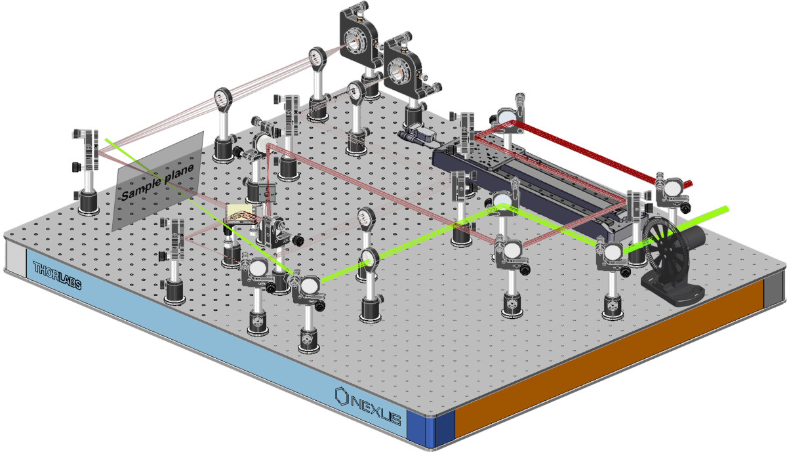
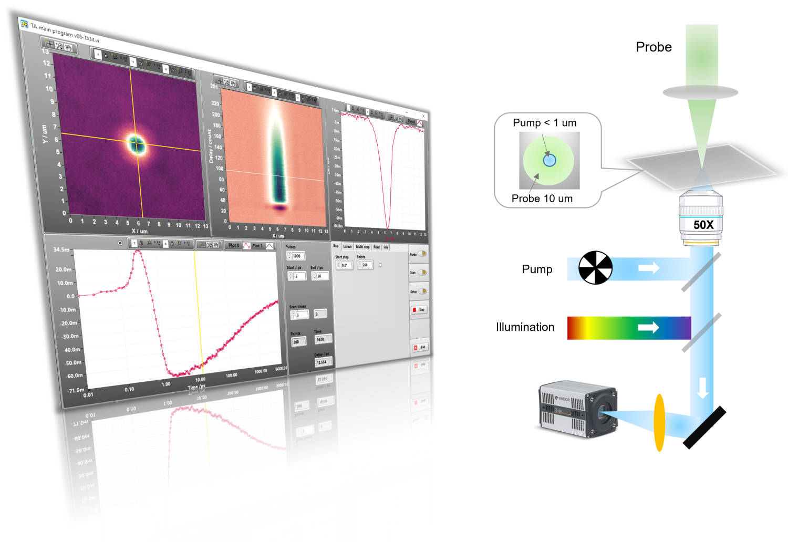
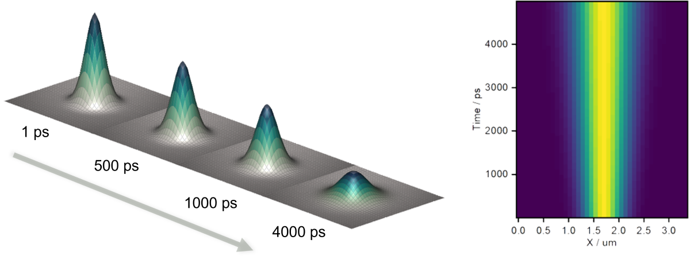
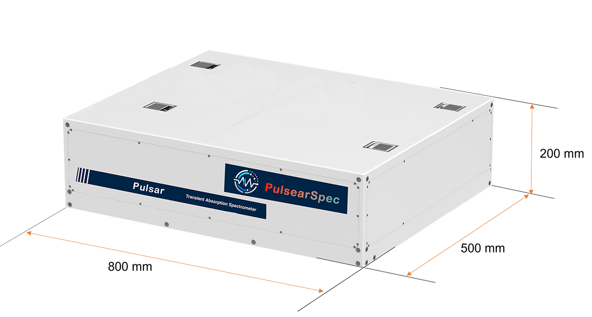

All-in-oneBox design, user-friendly control software
Overview
Pulsar is an automated femtosecond Transient Absorption Spectrometer. It is designed to work with a variety of amplified femtosecond lasers, including high-energy Ti:Sapphire amplifiers and high repetition rate Yb amplifiers. Together with our phase-locked trigger technique, Pulsar combines high data quality with simple, automated operation.
All-in-one box design
Pulsar, designed for optical laboratories, is ideally suited for use above optical tables. Its compact, all-in-one box design benefits from advanced lock-in technology. This innovation allows for all real-time processing to be completed by the hardware, significantly reducing the PC's workload and enhancing system fidelity. This design not only optimizes lab space but also ensures efficient and high-quality performance in optical experiments.
TA OEM options
Prefer to build your own setup? Besides the complete TA spectrometer, we offer a TA OEM package: you source the optics yourself, and we provide customized software for instrument automation. By integrating our Phase Lock Device into the TA setup, control software becomes simpler and more reliable.

Sample holder options
The magnetic stirrer allows for working with closed cuvettes (≥2 mm long) and can work with a simple cuvette holder. The translating sample holder can raster thinner cuvettes (which cannot be stirred easily), films, wafers, etc. The translating sample holder can work with transmissive as well as reflective samples.
TAM extension

The Transient Absorption Microscopy (TAM) extension adds spatial resolution to Pulsar's femtosecond time resolution, so you can follow how excited states diffuse through a material. Our TAM design applies the conjugate imaging technique, which improves both image quality and time resolution. Contact us to discuss how TAM fits your research.

6/12 ns delay window, extendable to milliseconds
The nanosecond window is achieved by using a direct-drive high-speed optical delay line. Custom-designed mounts are employed for the delay line optics to increase the beam alignment reproducibility and overall reliability. This delay line features high resolution as well as high speed. Scanning at high speeds is very important because it allows for pseudo-random stepping without a significant increase in the experiment time. This type of stepping is very useful for minimizing the effects of laser instability and sample degradation.
The standard 6 / 12 ns time window is extendable to milliseconds with the EOS add-on.
Optical delay line specifications:
Time window:
6/12 ns
Resolution:
14 fs
Minimum step size:
2.8 fs
Max. speed:
>10 ns/s
Acceleration:
> 260 ns/s²
Beam pointing drift:
<10 µm over 6 ns delay range
Probe reference option
Pulsar has an option for second probe (reference) channel. In this case, the probe beam is split into two before passing through the sample. While one arm travels through the sample, the other is sent directly to the reference spectrometer that monitors the fluctuations in the probe beam intensity. The main advantage of this approach is that it allows the user to achieve the specified signal-to-noise ratio with a lower number of averaged laser pulses. This method is recommended for experiments with low repetition rate and/or easily photodegradable samples where the number of laser shots is strongly limited.
Specifications
Parameter
Specification
Detection Mode
Switchable transmission or reflection mode
High-Speed Spectrometer
Visible/NIR spectrometer with up to 4 kHz acquisition rate, capable of full-spectrum acquisition in one go without the need to rotate the grating
White Light Spectral Range
330 nm to 1600 nm
Intelligent Optical Delay Line
Maximum speed of 400 mm/s, precision of 0.1 microns with automatic calibration for delay line back-reflection path
Detection Time Window
6/12 ns (expandable to ms)
Instrument Time Response Function (IRF)
1.5 × laser pulse width (regular mode)
Pre-zero Signal-to-Noise Ratio
≤ 0.1 mOD
Data Acquisition Software
Real-time observation of data collection and spectral dynamic changes, data point averaging, multi-curve dynamic comparison, chirp correction, time-zero correction, and single- and multi-exponential global fitting
Expansion Functions
Expandable to micro-area detection module, ultra-fast fluorescence module, transient absorption imaging module, mid-infrared detection module, nanosecond detection module, third beam excitation light, and TCSPC fluorescence lifetime module
Features
Sample handling
Automatic two-dimensional electronic control anti-damage sample stage with editable movement trajectories
Micro-solution magnetic stirrer for efficient mixing
Compatibility with cryostats, probe stations, electrical control devices, and external magnets for comprehensive coupling options
Dimension
Pulsar is designed to sit above a standard optical table. Its open layout leaves room for custom experimental configurations.

Documents
Product documents are below; manuals and other documents are available on request. Control and data processing software can be downloaded from the Software page.